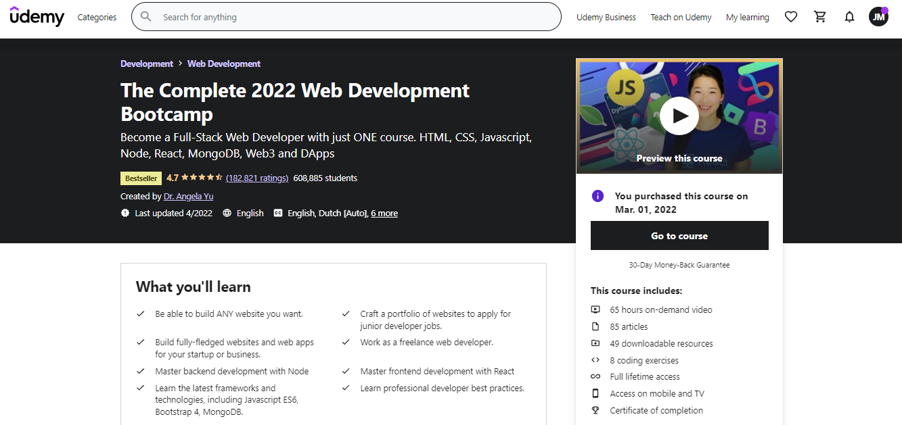
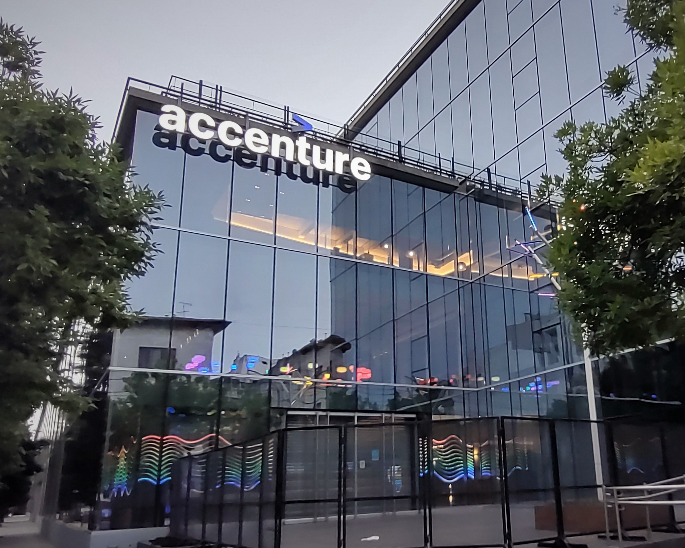
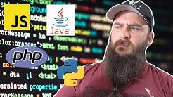
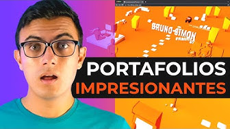
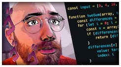

A little bit about me...
My name is Jesus. I'm 23 years old. I'm studying as Software Enginner and I'm coursing the 6th semester of University.
My hobbies are the programming and learn about the differents types of programming languages.
I would like to get a job as Front end using JavaScript and his frameworks, HTML and CSS. I would like to gain work experience and in the future I can find a job abroad.
A little bit about my experience...
- Programming languages that I have used in the school.

In my life I've used some programming languages in the school. The first programming language that I used was ASP.NET in Visual Studio 2012.
I used that language because I was learning about desktop apps. Then I learned to use PHP and MySQL, and in this case I learned that language and data base because my teacher
wanted us to learn about web programming. MySQL was my first database platform that I used.
When I entered to the University, our teacher teached us C and C++.
In the present, I'm learning Java in the school and I'm learning JavaScript, HTML and CSS on my own.
- Programming languages that I learned to use being self-taught.

I'm taking a course of Front-end developer and I'm learning HTML5, CSS with Bootstrap 4 and JavaScript with its features (react, DOM, JQuery).
Also I'm learning Back-end developer and the languages programming that I use in this course is Node.js, Express.js and EJS.
Before, I had learned Git and GitHub in another course but in this new course I was able to learn these apps in depth.
Finally, I will learn about databases with SQL, MongoDB and Mongoose. Previously, I had learned a little bit with SQL Server in school and I
learned how to create, update and delete elements in SQL Server tables.
- What is my dream job when I graduate from University?

When I was in the 2nd semester of collage, I went to a company which was dedicated to software development. Accenture was that company.
I would want to work in that company because I want to work as a Front-end Developer.
- Which are my favorite programming youtubers?
My first programming youtuber and my favorite too is HolaMundo.
HolaMundo is a youtuber who creates content about Front-end development. Also He creates courses on udemy as Full Stack Developer.

Other youtuber that I usually watch is Programador X. This youtuber is a programmer that live in Seattle, CA, Unite State.
He creates content about his live in Seattle and he also talks about all the languages and frameworks that exist and the most popular in the development world.

The last youtuber in my list is BettaTech. He talks about his life as Front-end programmer, but he also talks more
about data structure, types of programming and other more technical things.

Contact me.